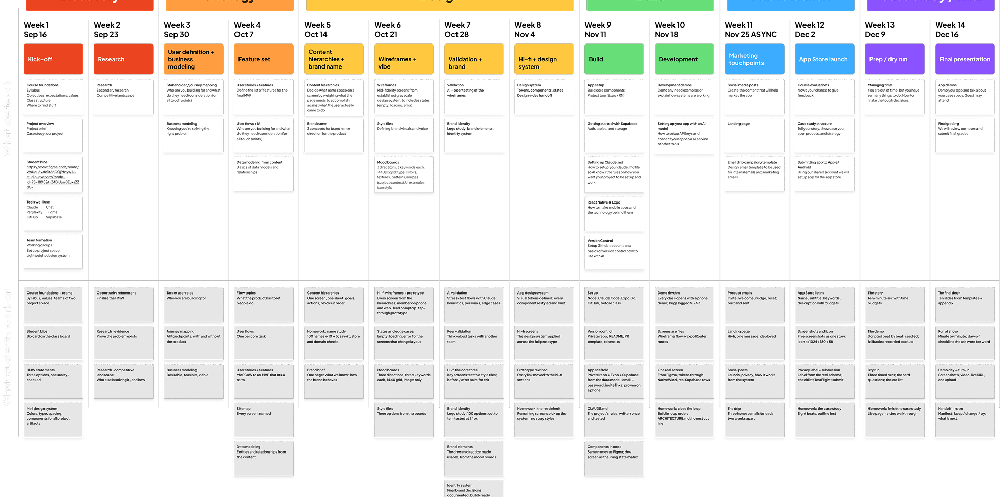
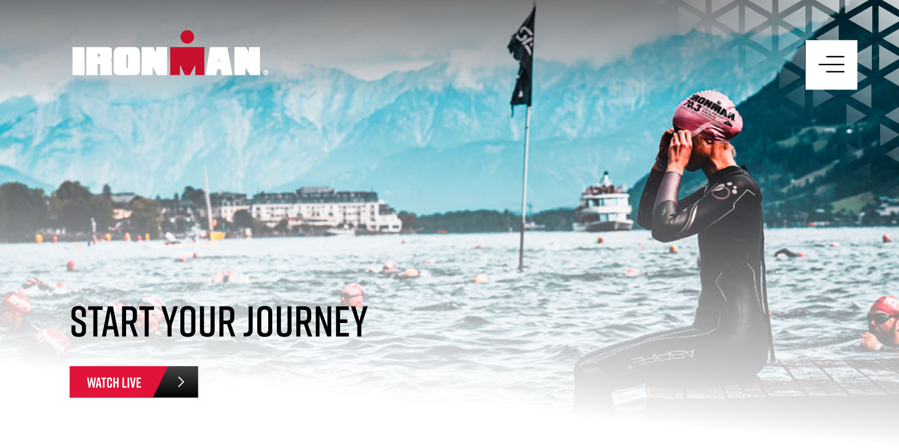
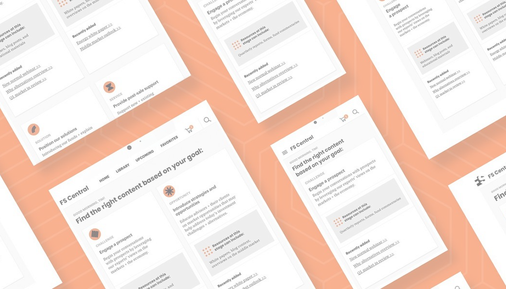

People, strategy, operational rigor.
Elizabeth, thank you for the time + conversation on Friday! At the close you named three areas of focus for this role. Here is how I think about each one, and what I have done. I have had one conversation about your team, so read this as a point of view rather than a plan.
01
People.
→Who makes the decisions
Building the next layer of leadership is the work I love.
Helping a manager through a complex stakeholder situation. Shaping leveling language. Working out what someone needs to be ready for the next thing, and meeting them where they are. I am good at this, and it is where I would put my hours.
I ran a 40-person experience organization at O3 this way, through a team of directors + managers. I rebuilt the team after the great resignation and held 90% retention over five years.
To recap a story from our call: one of them was deciding between leading people and leading projects. We pulled up the leveling matrix, talked through what each looks like week to week, ran some scenarios, and she chose projects. She was confident it was right for her, which is the part that mattered.
| Associate UX Designer | UX Designer | Senior UX Designer | Principal UX Designer | UX Design Manager | Senior UX Design Manager | Design Director | |
|---|---|---|---|---|---|---|---|
| Experience | 0–2 yrs | 2–6 yrs | 6–10 yrs | 10+ yrs | Designer + 2–5 yrs managing | Designer + 5+ yrs managing | Designer + 8+ yrs managing leaders |
| Supervision | Close supervision, little latitude | Moderate supervision, some latitude | Little supervision, ample latitude | Minimal supervision, full latitude | Minimal supervision, full latitude | Minimal supervision, full latitude | Sets direction, accountable to the business |
| Leadership | None | None | Mentors less experienced designers | Non-managing leader within the team | Leads and manages designers | Leads and manages designers | Leads managers, owns how the org is shaped |
| Consulting | Participates under the guidance of senior staff | Consults on well-defined projects with strategy and development | Leads complex engagements across teams and stakeholders | Drives org-wide design consulting strategy | Develops consulting capability within their team | Leads multiple complex engagements, builds org-wide programs | Owns the consulting relationship at the executive level |
| Client work | Building client communication + presentation skills | Comfortable with clients, presents own work | Seasoned presenter, articulates rationale | Masterful presenter, articulates rationale | Seasoned presenter, articulates rationale | Masterful presenter, articulates rationale | Presents to executive sponsors and boards |
| Associate UX Designer | UX Designer | Senior UX Designer | Principal UX Designer | UX Design Manager | Senior UX Design Manager | Design Director | |
|---|---|---|---|---|---|---|---|
| AI | Uses AI tools to explore and iterate | Integrates AI into regular workflow | Builds AI-augmented workflows for the team | Sets frameworks for AI in design systems | Rolls AI tools out across the practice | Owns org-wide AI-augmented design strategy | Sets the AI operating model for the organization |
| Practice | Follows established guidelines and processes | Follows established guidelines and processes | Supports practice improvements for the team | Leads practice activities and process improvements | Leads practice activities and process improvements | Leads practice improvements for the team and beyond | Defines what the practice is |
| Tools | Figma, Miro, Notion, Adobe Creative Suite, Atlassian Suite, Google Suite, Slack, Zoom | ||||||
| Associate UX Designer | UX Designer | Senior UX Designer | Principal UX Designer | UX Design Manager | Senior UX Design Manager | Design Director | |
|---|---|---|---|---|---|---|---|
| Apply optimism | Finds opportunities for learning in failure, recognizes peer success, eager to collaborate and help clients solve their challenges | ||||||
| Trust in people | Assumes positive intent, pitches in | Assumes positive intent, pitches in | Puts themselves in the client's shoes, resolves conflict with empathy | Gives clear and direct feedback from a place of care | Gives clear and direct feedback from a place of care | Gives clear and direct feedback from a place of care | Gives clear and direct feedback from a place of care |
| Commit to community | Regularly attends community and company events | Regularly attends community and company events | Participates in and attends community events | Leads and attends community events | Leads and attends community events | Leads and attends community events | Leads and attends community events |
| Embrace iteration | Strives for continuous improvement | Strives for continuous improvement | Champions improvement, shares knowledge with the team | Implements improvement, creates paths to success with clients | Implements improvement in workflow and process | Drives improvement in workflow and process | Drives improvement across the organization |
| Focus on the future | Embodies the gold standard | Embodies the gold standard | Embodies the gold standard | Identifies new opportunities for impact | Identifies opportunities, takes calculated risks | Pushes the team to a consulting mindset, takes calculated risks | Sets where the practice goes next |
02
Strategy.
→How the right decisions get made
Now that anyone can build anything, the hard part is knowing which problem is worth solving.
Good products are built on data, customer and stakeholder insight, and research, then balanced against what the business actually needs.
I teach an AI product studio at ArtCenter right now. Students ideate, validate, build, and ship to the App Store in one term. We use AI to move faster through process, then evaluate + challenge what it gives back. I push them hard on visual differentiation, because the default output is the average of everyone else's. They build business models to measure viability. They user test. They ship.
While at O3, IRONMAN came to us with one audience in their heads and several in reality. A pro chasing World Championship slots and a first-timer who cannot swim yet want almost nothing in common from the same brand. It needed to be two separate experiences. We mapped the goals + journeys for both, co-ran research with their team before design started, and built to it. The first site shipped in seventy-five days. 40,000 users on day one, and actions taken up 33% year over year.
At FS Investments our sales team was losing an average of 8 minutes at a time hunting for collateral. I took it to the President of Sales, got his sponsorship, and owned the product end-to-end. Search went from 8 minutes down to about 8 seconds.



03
Operational rigor
→how those decisions become excellent work
Give the team enough structure so that nobody has to guess. And show them where to push.
I build the starting line: a definition of good, clear decision rights, and a critique format where unfinished work is welcome. Teams move faster when they are not re-deciding the basics at the start of every project.
This matters more as teams move faster. AI can accelerate production enormously, and the operating system has to let people experiment freely while still holding the bar that was set.
Same approach for goal setting. A team that agrees on what matters stops doing good work on the wrong thing. I built a goal-mapping process for my department and later deployed it across the company.
At O3, the team and I co-created a department charter. I defined the north star and team blueprint, and we workshopped the rest: values, ground rules, norms, and standards for creating, presenting and measuring work. Creating it together is why they used it.
Kicking off new work with clients is a process. Every workshop activity has a template behind it, so the team could start from what we needed to learn and build the right kick-off for that client.
Everything below connects to it
Focus → dept goals
Our shared values help guide how we approach our work + how we collaborate with each other
Collaboration
Working together to achieve common goals and solve problems effectively.
Accessibility
Ensuring equal access + inclusion for all individuals, regardless of their abilities or circumstances.
Learning
Embracing continuous growth + acquiring new knowledge + skills.
Equity
Advocating for fairness + justice by providing equal opportunities + avoiding bias.
Thoughtfulness
Approaching situations with careful consideration + mindfulness.
Research-driven
Utilizing thorough research + analysis to inform decision-making and actions.
Curiosity
Embracing a sense of wonder + exploration to seek new insights + solutions.
Adaptability
Being flexible + open to change in order to respond effectively to evolving circumstances.
Empathy
Understanding and sharing the feelings and perspectives of others.
Fun
Promoting enjoyment and positive experiences in the work environment.
Prep for next steps
We want to get a full picture of all the steps a customer, and recipient, go through for a purchase.
Make sure we have all the right people in the room to provide insight into the journey.
Understand where the current look and feel of the site is and where you want to go.
Start thinking about the direction you'd like to take for visuals.
Thank you for your time!
Happy to answer any questions you might have.